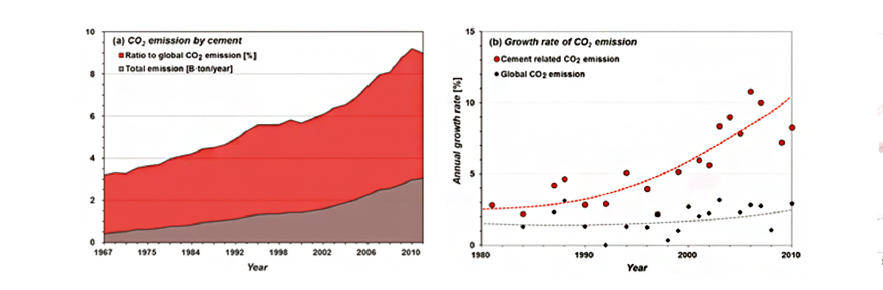
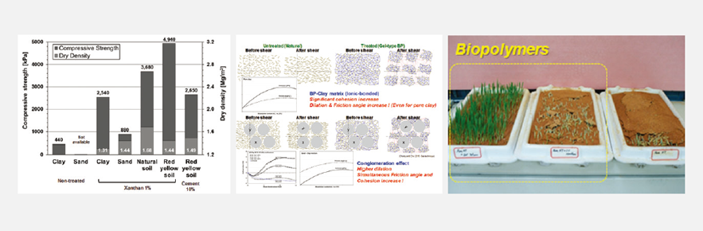
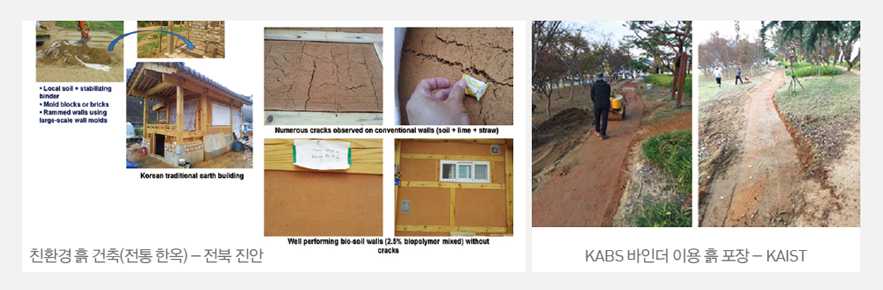
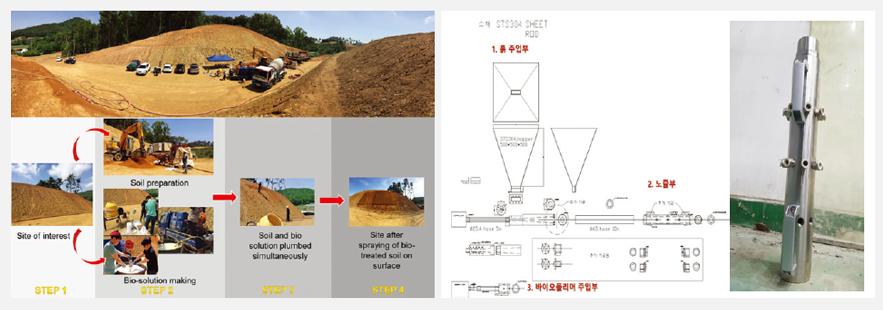

Report by Subjects
Report by Subjects
KAIST RESEARCH ACHIEVEMENTS
Development of Environmentally Friendly Geotechnical Construction Material using Biopolymers
Department of Civil and Environmental Engineering
Gye-Chun Cho
Summary
In 2030, a construction company has been hired to build a levee structure around a high-risk flood zone near a river. However, due to environmental protection laws and the existence a natural wildlife preserve downriver, materials such as cement cannot be used due to the potential for environmental pollution and health risks. Fortunately, the development of a geotechnical construction material based on biopolymers has allowed for the sustainable construction of a levee that is not only safe but also economical.
R&D Report
Biopolymers have been used to develop a 100% bio-based binder to serve as an alternative eco-friendly geotechnical construction material. Biopolymers are organic polymers that have been used in fields such as food, agriculture, cosmetics, and pharmaceuticals. However, they have not been applied in the field of construction until now. For the first time in the world, the microscopic interaction, feasibility, and strengthening mechanism of microbial biopolymers has been applied to soils and verified . Currently, construction techniques and equipment are being developed for the commercialization of this technology. Although environmental concerns related to construction have been gaining increasing attention worldwide, conventional construction methods in the field of geotechnical engineering have remained relatively unchanged for the last several centuries, despite the fact that materials such as cement and asphalt are known to pose environmental risks. As a means of alleviating these growing concerns while simultaneously developing and advancing outdated construction methods, the use of biopolymers in geotechnical engineering has been shown to be very promising.
 Global Cement-related CO2 Emissions by Year
Research Results
Experimental studies have shown that biopolymers can be used to significantly increase soil strength. The main mechanism behind this is the inter-particle interactions between the biopolymers and the soil particles. Depending on the specific purpose, this use of biopolymers could have diverse and numerous applications.
Strengthening Behavior
Experimental studies using Xanthan gum were performed to test its strengthening parameters on soils. Xanthan gum is a polysaccharide originating from the bacterium Xanthomonas campestris, which is composed of D-uronic acid, D-mannose, pyruvylated mannose, 6-O-acetyl D-mannose, and 1,4-linked glucan. Results (presented below) showed that the strengthening efficiency of Xanthan gum varied based on the soil type. However, at 1% concentration, the biopolymer achieved strengths nearly double that of 10% cement.
Vegetation Growth
Due to the hydrophilic nature of most biopolymers, their presence may enhance the water holding capacity of soils, which may promote plant growth. Tests showed that the biopolymer not only increased vegetation growth, but also strengthened the erosion resistance of the soil. With such properties, biopolymers could possibly be used to prevent desertification.
The results suggest that the use of biopolymers in the field of geotechnical engineering may provide alternative, eco-friendly materials that are capable of enhancing various engineering characteristics of soils. The development of such materials may also help advance construction techniques and technologies that have remained fairly stagnant for quite some time.
 Strengthening effect of biopolymer treated soil (left), bonding mechanism (middle), vegetation enhancement effect (right)
 Eco-friendly architecture (traditional hanok) - Jeonbuk Jinan
 Field application of biopolymer technology
Research Funding
The research described in this paper was financially supported by grants from the National Research Foundation of Korea (NRF) (No. 2015R1A2A2A03006268), which is funded by the Korean Ministry of Science, ICT and Future Planning, and the Water Management Research Program (No. 16AWMP-B114119-01), which is funded by the Korean Ministry of Land, Infrastructure and Transport, as well as by KAIST’s End Run Program (No. N01150661), supported by the Korean Ministry of Science, ICT and Future Planning.
Research Outcomes
• Chang, I., Im, J., and Cho, G.C., 2016, “Introduction of microbial biopolymers in soil treatment for future environmentally friendly and sustainable geotechnical engineering,” Sustainability, MDPI, Vol. 8, No. 3, Article No. 251, pp. 23. Others: SCI (E) papers: 7, Conference papers: 10 Patent
• Cho, G.C. and Chang, I. (inventors) and the Korea Advanced Institute of Science and Technology (assignee), “Method of stabilization in soil using biopolymer (바이오폴리머를 이 용한 흙 안정화방법),” Korean patent, Application No.: 10-2011-0033093 (April 11, 2011); Registration No.: 101201413 (November 11, 2012).
• Cho, G.C. and Chang, I. (inventors) and the Korea Advanced Institute of Science and Technology (assignee), “Soil building material using biopolymer (바이오폴리머를 이용한 흙 건 축 재료),” Korean patent, Application No.: 10-2015-0056859 (April 22, 2015); Registration No.: 10-1688834 (December 16, 2016). Others: Registered patents: 2 Applications submitted domestically: 4 Applications submitted overseas: 2